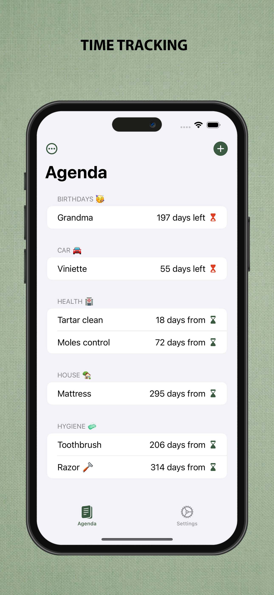
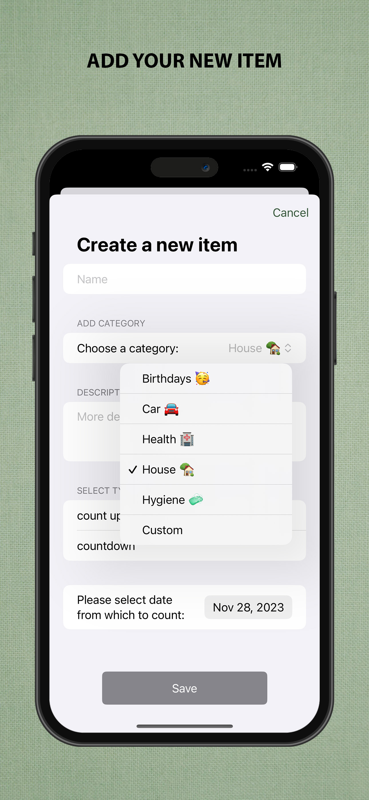
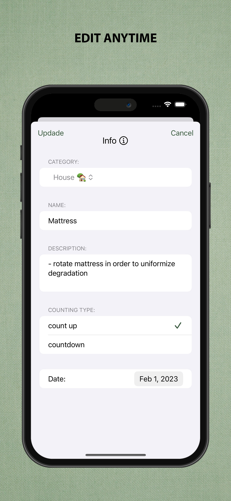
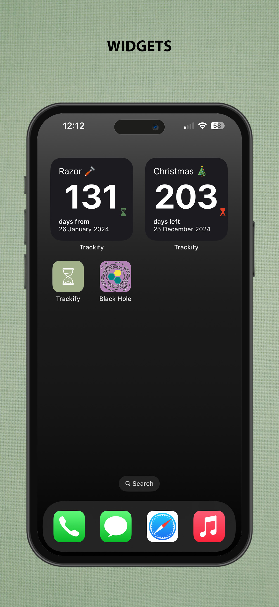

Trackify Manager
Privacy-first iOS application for managing recurring tasks, subscriptions, and important deadlines.
Overview
Trackify Manager is an iOS application designed to help users organize recurring activities, subscriptions, reminders, and deadlines in one place.
The application is built with privacy as a core principle. All user data remains on the device and no account, cloud synchronization, analytics, or tracking is required.
Why I Built It
I wanted a lightweight alternative to subscription and reminder applications that often require creating an account or storing personal information online. Trackify Manager focuses on speed, simplicity, and complete control over personal data.
Features
- Track recurring activities
- Manage subscriptions and renewals
- Create reminders and deadlines
- Native iOS notifications
- Offline-first experience
- No user accounts
- No analytics or tracking
Gallery




Technical Details
Privacy
Trackify Manager does not collect, transmit, or store personal information. All application data remains on the user's device. No analytics, advertising SDKs, or third-party tracking technologies are used.